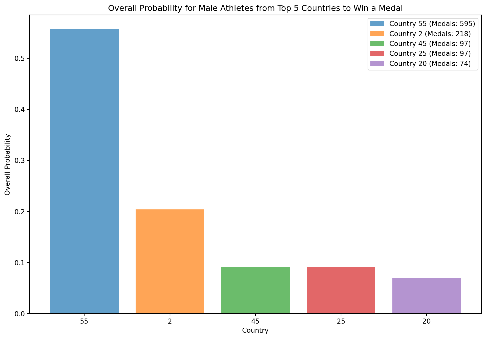
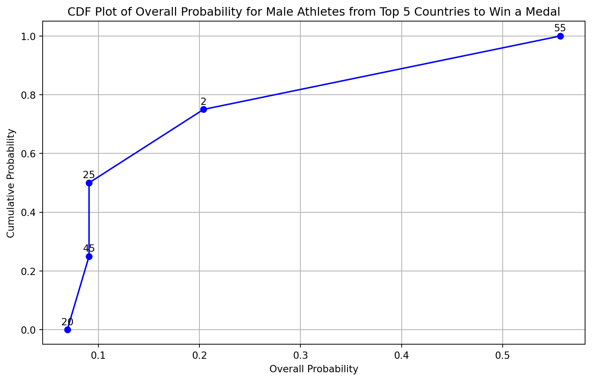
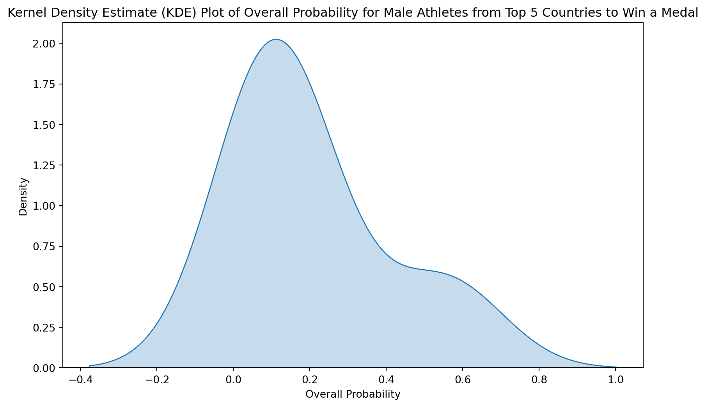

import pandas as pd
import numpy as np
import matplotlib.pyplot as pl
import seaborn as sns
from sklearn.preprocessing import LabelEncoder
from sklearn.naive_bayes import GaussianNB
from sklearn.model_selection import train_test_split
from sklearn.preprocessing import StandardScalerRandom Variable and Probability
A random variable is a way to describe the result of a test or experiment with numbers. If it can only be certain numbers or a list of numbers, it’s called “discrete.” If it can be any number in a range, it’s called “continuous.” For example, counting the cars sold in a day is discrete, while measuring a person’s weight can be any number and is continuous.
The probability distribution is like a map showing how likely each result is. For discrete variables, we use a “probability mass function” to show how probable each number is. It has two rules: the probability for each number must be positive, and when we add up all the probabilities, it should equal one.
Continuous variables can be any number, so we don’t talk about the chance of getting one exact number. Instead, we talk about the chance of falling into a range of numbers.
Gaussian Naive Bayes
Gaussian Naive Bayes is a smart way computers make predictions. It believes each group of things follows a certain pattern like how numbers spread out in a graph. It thinks each detail about something can independently help predict its group. It calculates the chance of something belonging to different groups and picks the one with the highest chance.
Bayes Formula:

In this post, we will find the probability of male athletes winning the gold medals from top 5 countries in Olympics using the Gaussian Bayes Naive model of probability theory.
Importing the required libraries:
Importing the dataset
data=pd.read_csv('athlete_events.csv', index_col="ID")
data.head()| Name | Sex | Age | Height | Weight | Team | NOC | Games | Year | Season | City | Sport | Event | Medal | |
|---|---|---|---|---|---|---|---|---|---|---|---|---|---|---|
| ID | ||||||||||||||
| 1 | A Dijiang | M | 24.0 | 180.0 | 80.0 | China | CHN | 1992 Summer | 1992 | Summer | Barcelona | Basketball | Basketball Men's Basketball | NaN |
| 2 | A Lamusi | M | 23.0 | 170.0 | 60.0 | China | CHN | 2012 Summer | 2012 | Summer | London | Judo | Judo Men's Extra-Lightweight | NaN |
| 3 | Gunnar Nielsen Aaby | M | 24.0 | NaN | NaN | Denmark | DEN | 1920 Summer | 1920 | Summer | Antwerpen | Football | Football Men's Football | NaN |
| 4 | Edgar Lindenau Aabye | M | 34.0 | NaN | NaN | Denmark/Sweden | DEN | 1900 Summer | 1900 | Summer | Paris | Tug-Of-War | Tug-Of-War Men's Tug-Of-War | Gold |
| 5 | Christine Jacoba Aaftink | F | 21.0 | 185.0 | 82.0 | Netherlands | NED | 1988 Winter | 1988 | Winter | Calgary | Speed Skating | Speed Skating Women's 500 metres | NaN |
To make our data machine learning ready, let’s first identify the missing values:
data.apply(pd.isnull).sum()/data.shape[0]Name 0.000000
Sex 0.000000
Age 0.034944
Height 0.221938
Weight 0.231912
Team 0.000000
NOC 0.000000
Games 0.000000
Year 0.000000
Season 0.000000
City 0.000000
Sport 0.000000
Event 0.000000
Medal 0.853262
dtype: float64Let’s select the important features and convert them into columns:
athletes= data[["Team","Sex", "Season","Sport","Medal"]].copy()
athletes.columns = ["country","sex","season", "sport","medal"]
athletes.head()| country | sex | season | sport | medal | |
|---|---|---|---|---|---|
| ID | |||||
| 1 | China | M | Summer | Basketball | NaN |
| 2 | China | M | Summer | Judo | NaN |
| 3 | Denmark | M | Summer | Football | NaN |
| 4 | Denmark/Sweden | M | Summer | Tug-Of-War | Gold |
| 5 | Netherlands | F | Winter | Speed Skating | NaN |
athletes.apply(pd.isnull).sum()/athletes.shape[0]country 0.000000
sex 0.000000
season 0.000000
sport 0.000000
medal 0.853262
dtype: float64Let’s only select the medal winning countries and drop all non-medal winning countries:
athletes = athletes[athletes['medal'].isin(['Gold', 'Silver', 'Bronze'])].dropna(subset=['medal'])
athletes.tail()| country | sex | season | sport | medal | |
|---|---|---|---|---|---|
| ID | |||||
| 135553 | Soviet Union | F | Summer | Athletics | Silver |
| 135553 | Soviet Union | F | Summer | Athletics | Bronze |
| 135554 | Poland | M | Summer | Fencing | Bronze |
| 135563 | Russia | F | Summer | Athletics | Bronze |
| 135563 | Russia | F | Summer | Athletics | Silver |
Let’s divide our medals category into gold and non-gold:
new_athletes = athletes.copy()
new_athletes['target'] = new_athletes['medal'].apply(lambda x: 'gold' if x =='Gold' else 'no gold')
new_athletes| country | sex | season | sport | medal | target | |
|---|---|---|---|---|---|---|
| ID | ||||||
| 4 | Denmark/Sweden | M | Summer | Tug-Of-War | Gold | gold |
| 15 | Finland | M | Summer | Swimming | Bronze | no gold |
| 15 | Finland | M | Summer | Swimming | Bronze | no gold |
| 16 | Finland | M | Winter | Ice Hockey | Bronze | no gold |
| 17 | Finland | M | Summer | Gymnastics | Bronze | no gold |
| ... | ... | ... | ... | ... | ... | ... |
| 135553 | Soviet Union | F | Summer | Athletics | Silver | no gold |
| 135553 | Soviet Union | F | Summer | Athletics | Bronze | no gold |
| 135554 | Poland | M | Summer | Fencing | Bronze | no gold |
| 135563 | Russia | F | Summer | Athletics | Bronze | no gold |
| 135563 | Russia | F | Summer | Athletics | Silver | no gold |
39783 rows × 6 columns
This implies that we still have large dataset, so to further filter it, let’s take the data for summer Olympics and in sports swimming only:
selected_sports = ['Swimming']
player = new_athletes[new_athletes['sport'].isin(selected_sports)]selected_season = ['Summer']
players=player[player['season'].isin(selected_season)]players.apply(pd.isnull).sum()
players.head()| country | sex | season | sport | medal | target | |
|---|---|---|---|---|---|---|
| ID | ||||||
| 15 | Finland | M | Summer | Swimming | Bronze | no gold |
| 15 | Finland | M | Summer | Swimming | Bronze | no gold |
| 100 | Hungary | M | Summer | Swimming | Bronze | no gold |
| 259 | Canada | F | Summer | Swimming | Bronze | no gold |
| 424 | South Africa | F | Summer | Swimming | Bronze | no gold |
For the simplicity of our model, let’s label encode our data for all the important features:
label_encoder = LabelEncoder()
columns_to_encode = ['sex', 'country', 'season', 'sport', 'target']
players[columns_to_encode] = players[columns_to_encode].apply(label_encoder.fit_transform)Now, let’s identify the countries with highest gold medal wins in Olympics in Swimming:
male_df = players[players['sex'] == 1]
male_medals_count = male_df.groupby('country')['medal'].count().reset_index()
male_top_countries = male_medals_count.sort_values(by='medal', ascending=False).head(5)
print("Top 5 countries with the most medals for males:")
print(male_top_countries)
female_df = players[players['sex'] == 0]
female_medals_count = female_df.groupby('country')['medal'].count().reset_index()
female_top_countries = female_medals_count.sort_values(by='medal', ascending=False).head(5)
print("\nTop 5 countries with the most medals for females:")
print(female_top_countries)Top 5 countries with the most medals for males:
country medal
48 55 595
2 2 218
38 45 97
21 25 97
17 20 74
Top 5 countries with the most medals for females:
country medal
36 55 471
2 2 183
12 16 113
22 30 95
14 19 83Since we are only interested in finding the probability of countries winning gold medals in swimming by male swimmers, we will not use female swimmers data from here onwards.
Filtering the male athletes and training the data:
male_players = players[players['sex'] == 1]
subset_male_players = male_players[male_players['country'].isin(male_top_countries['country'])]
X_subset_male = subset_male_players[['country']]
y_subset_male = subset_male_players['target']
X_train, X_test, y_train, y_test = train_test_split(X_subset_male, y_subset_male, test_size=0.3, random_state=42)Initializing the Gaussian Naive Bayes model and fitting it:
gnb = GaussianNB()
gnb.fit(X_train, y_train)GaussianNB()In a Jupyter environment, please rerun this cell to show the HTML representation or trust the notebook.
On GitHub, the HTML representation is unable to render, please try loading this page with nbviewer.org.
GaussianNB()
Predicting probabilities of individual athletes first on the test set, we get:
probability_predictions_male = gnb.predict_proba(X_test)[:, 1]
print("Predicted Probabilities for Male Athletes from Top 5 Countries:")
print(probability_predictions_male)Predicted Probabilities for Male Athletes from Top 5 Countries:
[0.39268397 0.39268397 0.39268397 0.89063969 0.71646832 0.39268397
0.39268397 0.39268397 0.6589237 0.6589237 0.89063969 0.71646832
0.39268397 0.39268397 0.39268397 0.39268397 0.39268397 0.6589237
0.89063969 0.39268397 0.39268397 0.39268397 0.39268397 0.39268397
0.39268397 0.39268397 0.39268397 0.89063969 0.89063969 0.39268397
0.39268397 0.39268397 0.39268397 0.89063969 0.89063969 0.39268397
0.39268397 0.39268397 0.6589237 0.6589237 0.45770689 0.39268397
0.39268397 0.6589237 0.39268397 0.39268397 0.89063969 0.89063969
0.39268397 0.39268397 0.39268397 0.6589237 0.89063969 0.39268397
0.39268397 0.39268397 0.6589237 0.39268397 0.45770689 0.71646832
0.39268397 0.6589237 0.45770689 0.45770689 0.39268397 0.39268397
0.39268397 0.89063969 0.45770689 0.45770689 0.39268397 0.89063969
0.45770689 0.39268397 0.89063969 0.39268397 0.6589237 0.71646832
0.39268397 0.71646832 0.89063969 0.39268397 0.39268397 0.39268397
0.39268397 0.89063969 0.45770689 0.6589237 0.6589237 0.39268397
0.39268397 0.39268397 0.89063969 0.39268397 0.39268397 0.89063969
0.39268397 0.6589237 0.89063969 0.39268397 0.39268397 0.39268397
0.39268397 0.39268397 0.39268397 0.39268397 0.39268397 0.89063969
0.89063969 0.39268397 0.39268397 0.6589237 0.89063969 0.6589237
0.39268397 0.89063969 0.39268397 0.39268397 0.39268397 0.45770689
0.39268397 0.89063969 0.89063969 0.89063969 0.39268397 0.39268397
0.39268397 0.39268397 0.89063969 0.89063969 0.6589237 0.39268397
0.45770689 0.39268397 0.39268397 0.45770689 0.89063969 0.39268397
0.71646832 0.89063969 0.45770689 0.39268397 0.89063969 0.39268397
0.39268397 0.39268397 0.89063969 0.89063969 0.39268397 0.39268397
0.71646832 0.39268397 0.45770689 0.39268397 0.39268397 0.71646832
0.6589237 0.89063969 0.89063969 0.39268397 0.6589237 0.39268397
0.39268397 0.39268397 0.45770689 0.39268397 0.39268397 0.89063969
0.89063969 0.39268397 0.39268397 0.39268397 0.39268397 0.39268397
0.6589237 0.89063969 0.39268397 0.39268397 0.89063969 0.89063969
0.39268397 0.71646832 0.39268397 0.45770689 0.39268397 0.39268397
0.89063969 0.71646832 0.89063969 0.89063969 0.71646832 0.39268397
0.39268397 0.39268397 0.39268397 0.89063969 0.89063969 0.71646832
0.39268397 0.45770689 0.39268397 0.39268397 0.71646832 0.89063969
0.6589237 0.39268397 0.39268397 0.39268397 0.39268397 0.39268397
0.45770689 0.39268397 0.89063969 0.39268397 0.6589237 0.71646832
0.39268397 0.39268397 0.39268397 0.39268397 0.6589237 0.89063969
0.39268397 0.39268397 0.6589237 0.89063969 0.6589237 0.39268397
0.6589237 0.89063969 0.89063969 0.39268397 0.45770689 0.39268397
0.89063969 0.45770689 0.39268397 0.45770689 0.89063969 0.39268397
0.39268397 0.6589237 0.89063969 0.39268397 0.6589237 0.39268397
0.71646832 0.39268397 0.39268397 0.39268397 0.39268397 0.39268397
0.39268397 0.71646832 0.39268397 0.6589237 0.39268397 0.39268397
0.39268397 0.89063969 0.39268397 0.71646832 0.45770689 0.39268397
0.71646832 0.39268397 0.39268397 0.89063969 0.39268397 0.89063969
0.45770689 0.39268397 0.89063969 0.39268397 0.39268397 0.39268397
0.45770689 0.39268397 0.39268397 0.39268397 0.39268397 0.45770689
0.89063969 0.6589237 0.71646832 0.39268397 0.6589237 0.39268397
0.6589237 0.39268397 0.89063969 0.89063969 0.39268397 0.89063969
0.89063969 0.71646832 0.89063969 0.39268397 0.39268397 0.6589237
0.71646832 0.89063969 0.45770689 0.39268397 0.6589237 0.39268397
0.39268397 0.39268397 0.39268397 0.39268397 0.6589237 0.6589237
0.89063969 0.89063969 0.39268397 0.39268397 0.89063969 0.89063969
0.71646832 0.39268397 0.39268397 0.39268397 0.45770689 0.39268397
0.39268397]It is difficult the analyze the individual result so we try to find the combine results of prob of top 5 countries to win a medal in swimming:
probability_predictions_male = gnb.predict_proba(X_subset_male)[:, 1]
overall_probability_male = np.mean(probability_predictions_male)
print("Overall Probability for Male Athletes from Top 5 Countries to Win a Medal:")
print(overall_probability_male)Overall Probability for Male Athletes from Top 5 Countries to Win a Medal:
0.5449937432651061Actually, it is an interesting result because we can see that top 5 countries dominance has been so much in male swimming they have won more than half of Olympics gold.
Now let’s see the individual probability of top 5 countries:
male_players = players[players['sex'] == 1]
individual_probabilities_male = []
for country in male_top_countries['country']:
subset_male_players_country = male_players[(male_players['country'] == country)]
X_subset_male_country = subset_male_players_country[['country']]
probability_predictions_male_country = gnb.predict_proba(X_subset_male_country)[:, 1]
individual_probability_country = np.mean(probability_predictions_male_country)
individual_probabilities_male.append(individual_probability_country)
total_male_medals = male_players['target'].sum()
overall_probabilities_male = [count / total_male_medals for count in male_top_countries['medal']]
print("\nOverall Probabilities for Male Athletes from Top 5 Countries to Win a Medal:")
for country, overall_probability in zip(male_top_countries['country'], overall_probabilities_male):
print(f"{country}: {overall_probability}")
Overall Probabilities for Male Athletes from Top 5 Countries to Win a Medal:
55: 0.5571161048689138
2: 0.20411985018726592
45: 0.09082397003745318
25: 0.09082397003745318
20: 0.06928838951310862male_top_countries['overall_probability_male'] = overall_probabilities_male
male_top_countries| country | medal | overall_probability_male | |
|---|---|---|---|
| 48 | 55 | 595 | 0.557116 |
| 2 | 2 | 218 | 0.204120 |
| 38 | 45 | 97 | 0.090824 |
| 21 | 25 | 97 | 0.090824 |
| 17 | 20 | 74 | 0.069288 |
Now, we ca visualize the results in different ways:
pl.figure(figsize=(12, 8))
for i, (country, medal_count, overall_probability) in enumerate(male_top_countries.itertuples(index=False)):
pl.bar(i, overall_probability, label=f'Country {country} (Medals: {medal_count})', alpha=0.7)
pl.xlabel('Country')
pl.ylabel('Overall Probability')
pl.title('Overall Probability for Male Athletes from Top 5 Countries to Win a Medal')
pl.xticks(range(len(male_top_countries)), male_top_countries['country'])
pl.legend()
pl.show()
overall_probabilities_male = [0.557116, 0.204120, 0.090824, 0.090824, 0.069288]
countries = ['55', '2', '45', '25', '20']
sorted_data = sorted(zip(overall_probabilities_male, countries), key=lambda x: x[0])
sorted_probabilities, sorted_countries = zip(*sorted_data)
cumulative_probabilities = np.linspace(0, 1, len(sorted_probabilities))
# Create the CDF plot
pl.figure(figsize=(10, 6))
pl.plot(sorted_probabilities, cumulative_probabilities, marker='o', linestyle='-', color='b')
for prob, country, cumulative_prob in zip(sorted_probabilities, sorted_countries, cumulative_probabilities):
pl.annotate(f'{country}', (prob, cumulative_prob), textcoords="offset points", xytext=(0, 5), ha='center')
pl.xlabel('Overall Probability')
pl.ylabel('Cumulative Probability')
pl.title('CDF Plot of Overall Probability for Male Athletes from Top 5 Countries to Win a Medal')
pl.grid(True)
pl.show()
overall_probabilities_male = [0.557116, 0.204120, 0.090824, 0.090824, 0.069288]
male_top_countries = pd.DataFrame({
'country': [55, 2, 45, 25, 20],
'overall_probability': overall_probabilities_male
})
pl.figure(figsize=(10, 6))
sns.kdeplot(data=male_top_countries['overall_probability'], fill=True, common_norm=False)
pl.xlabel('Overall Probability')
pl.ylabel('Density')
pl.title('Kernel Density Estimate (KDE) Plot of Overall Probability for Male Athletes from Top 5 Countries to Win a Medal')
pl.show()
These results clearly shows that USA is the flag bearer of Olympics swimming in male category. No one is close competitor to them. They have dominated the event overwhelmingly. Distant second is Australia, followed by Germany, Hungary and Japan. Though the latest Olympics data are unavailable, we also know that Britain and China are also not far behind to them and might catch up in upcoming events.